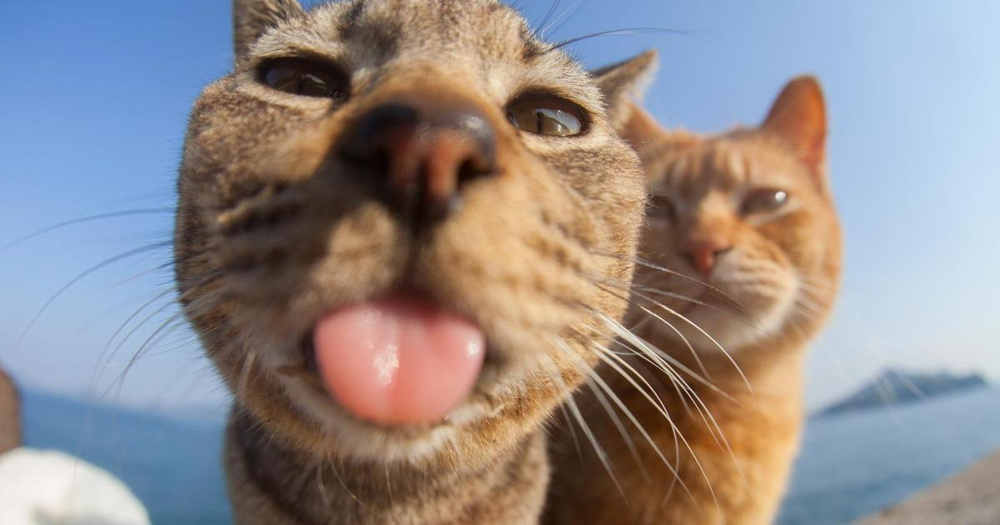

Обязанности по дому каждого cat
Кот должен отсыпаться за человека, всех его родственников, друзей и соседей вместе взятых.
Кот должен защищать человека от комнатных растений
Кот постоянно должен поддерживать человека в форме, заставляя его непрестанно двигаться по квартире, нагибаться, собирая ручки, карандаши, носки и т. д.
Кот должен крепко держать зубами ручку или карандаш, пока человек
пытается писать.
Кот постоянно должен проводить ревизию в холодильнике, даже если
человек этого не хочет. Если он не хочет, значит, что-то там прячет, и с этим
что-то следует хорошенько разобраться, а потом уж призвать к ответу самого
человека
Кот должен ночью каждый час проверять, не заползла ли под одеяло
человеку какая-нибудь змея.
Кот время от времени должен тренировать себя на случай непредвиденного
циркового выступления. Для этого он должен периодически устраивать
полеты под куполом дома, прыжки с гардины на люстру и обратно и другие
всевозможные запрыгивания.
Кот должен помогать человеку стелить постель, внимательно наблюдая,
чтобы под простыней не оказалось никаких предметов.
Кот должен помнить, что сон для человека – это пустая трата времени,
поэтому, завидев спящего человека, необходимо тут же его разбудить,
прыгнув ему на живот, а еще лучше на голову.
Кот должен каждое утро напоминать человеку старую пословицу: «Кто рано
встает, тому Бог дает». И чем раньше встанет человек, тем больше ему (а
заодно и коту) даст Бог
Кот должен делиться с человеком всем, что у него есть. Постоянно отдавать
часть меха на утепление одежды и пола и выкидывать половину еды из
чашки.
Кот должен петь песни, чтобы доставлять человеку радость. Даже если
песни грустные.
Кот должен проверять, по какой причине кто-то не закрыл шкаф или
тумбочку и не задвинул ящик.
Кот должен проверять, по какой причине кто-то не закрыл шкаф или
тумбочку и не задвинул ящик.
Кот должен знать, что лежит во всех коробках и пакетах. И на личном опыте
убедиться, насколько там удобно и хорошо находиться.
Кот должен во время сна человека заглушать наружный шум, громко урча
под ухом.
- Кот должен отсыпаться за человека, всех его родственников, друзей и
соседей вместе взятых.
- Кот должен защищать человека от комнатных растений.
- Кот постоянно должен поддерживать человека в форме, заставляя его
непрестанно двигаться по квартире, нагибаться, собирая ручки, карандаши,
носки и т. д.


GO NEXT